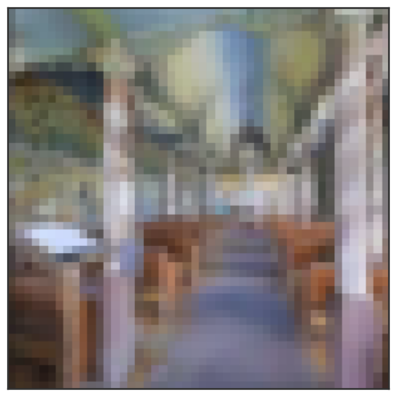

Methods



Our comparative testbed isolates visual bandwidth as the sole variable. We evaluate five conditions spanning a graded scale of visual bandwidth: blind (no vision), coarse (48x48 pixels collapsed to a 1x1 bottleneck), foveated (eccentricity-dependent gaussian blur), foveated-logpolar (retinal grid), and uniform (unblurred 256x256). Crucially, all five conditions share an identical ResNet-18 encoder backbone and a 3-layer LSTM[6],[11], and all are provided with the exact same non-visual sensor stack (goal, GPS, compass, previous action), ensuring that any divergence in memory stems purely from the visual input. Agents were trained from scratch using DD-PPO[6] on a PointGoal navigation task[5] for a 250M-frame budget across a merged pool of 3D environments[7],[8]. Following training, the weights were frozen and the top-layer hidden state (h₂ ∈ ℝ512) was collected step-by-step from fresh, out-of-distribution rollouts across 18 held-out test scenes. We then read this frozen memory along three complementary views of a single capacity allocation—magnitude (how much linearly-readable position survives), format (what shape that code takes, spatially and temporally), and consumption (whether the policy actually uses it)—using a convergent battery of linear and non-linear (MLP) probes, mutual-information estimation, leave-one-scene-out validation, subspace geometry, and causal memory transplants. Following standard practice in comparative-cognition modeling[11], we train a single seed per condition and instead derive rigor from this multi-method convergence.
Disclaimer: Although the agents in this study do share the same architecture for the encoder (and memory), their weights are in fact co-trained with the policy which means that, throughout training, the different agents will effectively end up developing different "encoders" since the weights will end up being different because of the differences in the inputs.